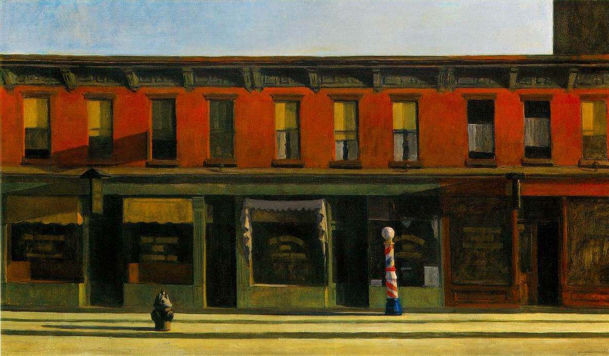

I currently run Laplace Research, an AI lab focused on tackling forecasting.
I'm hugely into crypto and decentralized finance. Following the singularity (better known as the release of ChatGPT), I believe that the operations and economics of the world's financial institutions will drastically change in a way that might scare humans. I'm working on a few things at Touchstone Markets and Stanford's AFT Lab to make the transition safe.
After high school, I spent two years at De Anza College studying Math and Economics. I will spend the next two years doing the same at UC San Diego. In this time, I have worked as a Research Engineer at Esplanade Capital, a Software Engineer at Alexandria, and founded Monolith Investments LP, a fund that ran a quasi-quantitative strategy revolved around AGI and compute. You can find me in San Francisco, Seattle, or San Diego.
I love badminton, pickleball, and anything that involves both a racket and my friends. I have a lot I want to accomplish before I die, so expect this page to change a lot as I check things off my list.
